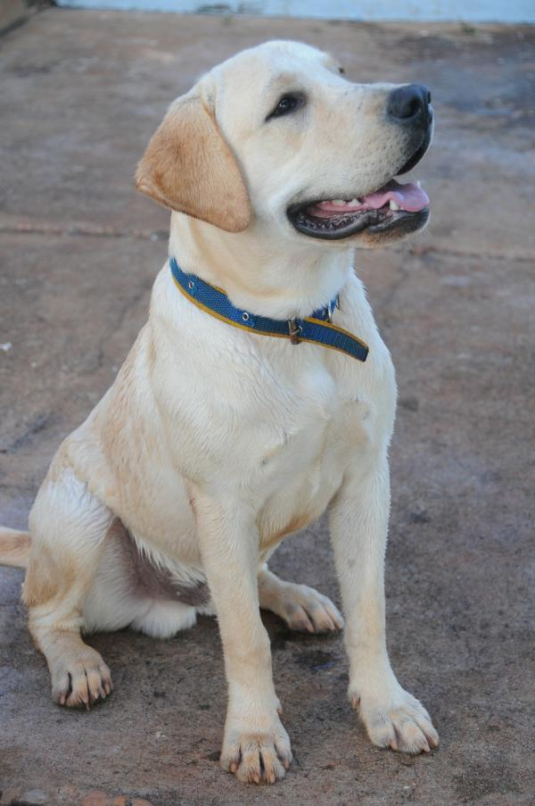
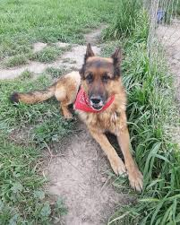
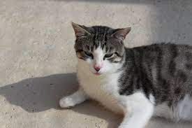
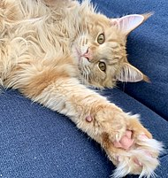
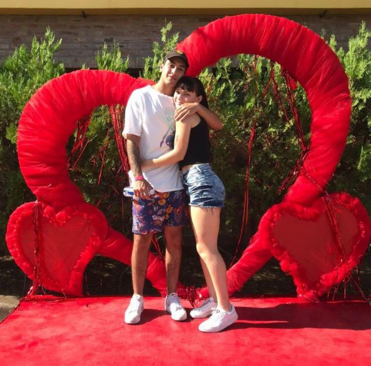

Nuestros animales:
Luna
- Edad: 2 años
- Raza: Labrador Retriever mix
- Tamaño: Mediano
- Color: Amarillo
Historial médico
Luna está esterilizada, al día en sus vacunas y ha pasado recientemente un examen veterinario completo. Su salud es óptima y no tiene condiciones médicas crónicas.
Comportamiento
Luna es una perrita cariñosa y juguetona.
Se lleva bien con otros perros y es amigable con los niños.
Le encanta pasear y jugar al aire libre. Es obediente y aprende rápidamente.

¡ADOPTAR!
Roco
- Edad: 3 años
- Raza: Pastor Alemán
- Tamaño: Grande
- Color: Marrón y Negro
Historial médico
Roco ha sido esterilizado y está al día en todas sus vacunas. Ha sido tratado por una infección de oído que se ha curado completamente. No presenta problemas de salud actuales.
Comportamiento
Roco es un perro leal y protector. Es tranquilo en casa pero lleno de energía
durante los paseos.
Tiene habilidades básicas de entrenamiento y es respetuoso con otros perros. Ideal para un hogar con espacio para jugar.

¡ADOPTAR!
Mini
- Edad: 1 año
- Raza: Común
- Tamaño: Pequeño
- Color: Atigrado gris y blanco
Historial médico
Mini está esterilizada y completamente vacunada. No tiene problemas de salud conocidos. Ha sido revisada por el veterinario recientemente y está en perfecto estado de salud.
Comportamiento
Mini es una gata juguetona y curiosa. Le encanta explorar
y también disfruta de largas siestas al sol.
Es cariñosa y se lleva bien con otros gatos. Ideal para un hogar tranquilo.

¡ADOPTAR!
Simba
- Edad: 2 años
- Raza: Maine Coon mix
- Tamaño: Mediano-Grande
- Color: Naranja y blanco
Historial médico
Simba ha sido esterilizado y está al día en todas sus vacunas. No tiene problemas de salud crónicos. Ha pasado un examen dental reciente y tiene dientes en excelente estado.
Comportamiento
Simba es un gato majestuoso y afectuoso. Disfruta de la compañía humana y se adapta bien a otros animales en casa.
Le gusta jugar
con juguetes interactivos y recibir caricias. Un compañero perfecto para hogares activos.

¡ADOPTAR!
Preguntas frecuentes
¿Cuáles son los beneficios de adoptar en lugar de comprar una mascota?
- La adopción ayuda a dar un hogar a animales necesitados.
- Contribuye a reducir la población de animales abandonados.
¿Qué información se proporciona sobre los animales disponibles?
- Historial médico y comportamental.
- Nivel de energía, compatibilidad con otros animales y necesidades especiales.
¿Puedo visitar a los animales antes de adoptar?
- ¡Sí! Fomentamos las visitas para asegurar una buena conexión.
¿Los animales adoptados están esterilizados/castrados y vacunados?
- Sí, todos nuestros animales son esterilizados/castrados y reciben las vacunas necesarias antes de la adopción.
¿Qué sucede si no puedo cuidar del animal después de adoptarlo?
- Tenemos políticas de devolución y trabajaremos contigo para encontrar una solución adecuada.
¿Ofrecen servicios de seguimiento post-adopción?
- Sí, nos preocupamos por el bienestar de nuestros animales y estamos disponibles para apoyo continuo.
¿Cómo puedo colaborar o donar para ayudar a los animales en el refugio?
- Ofrecemos diversas formas de colaborar, desde donaciones hasta voluntariado. ¡Tu apoyo es crucial!
¿Quiénes somos?
Somos una pareja de 18 años, Luca y Lucia, nos encantan los animales, por eso queremos darle una vida feliz a todos aquellos animalitos que no tengan un hogar 
¿Qué necesitas para adoptar en LuLu?
- Ser mayor de edad.
- Proporcionar pruebas de vivienda permitiendo mascotas.
- Asegurarte de tener tiempo y recursos para cuidar del animal.
- amor para su animalito.
SEGURO
GRATIS
SENCILLO
¿Cómo adoptar en LuLu?
- Explora Nuestra Galería de Mascotas:
Visita nuestra sección de adopciones en línea para explorar la galería de mascotas disponibles.
- Haz Clic en la Mascota de tu Elección:
Haz clic en la imagen o el perfil de la mascota que te ha cautivado para obtener más detalles sobre ella.
- Completa el Formulario de Solicitud:
Si decides que la mascota es la adecuada para ti, completa nuestro formulario de solicitud en línea. Este formulario recopila información sobre tu experiencia con mascotas, estilo de vida y tus planes para el cuidado del nuevo integrante de tu familia.
- Entrevista Virtual:
Una vez recibida tu solicitud, nuestro equipo se pondrá en contacto contigo para programar una entrevista virtual. Esta entrevista nos permitirá conocerte mejor y asegurarnos de que tu hogar sea el ambiente perfecto para la mascota que has elegido.
- Inspección Virtual del Hogar:
Para garantizar la seguridad y el bienestar de la mascota, es posible que realicemos una inspección virtual de tu hogar. Esta etapa ayuda a asegurar que el entorno sea adecuado y seguro para tu futura mascota.
- Aprobación y Documentación:
Después de completar la entrevista y la inspección, recibirás la aprobación para la adopción. Firmaremos el acuerdo de adopción, que detalla los términos y condiciones, así como los compromisos mutuos.
- Prepara tu Hogar:
Antes de la llegada de tu nueva mascota, asegúrate de tener todo listo en casa. Esto incluye alimentos, juguetes, una cama cómoda y otros elementos esenciales para su bienestar.
- Recoge a tu Nueva Mascota:
Programa una cita para recoger a tu nueva mascota en nuestro centro de adopción. Nuestro equipo estará encantado de brindarte orientación y consejos para la transición.
- Visita al Veterinario:
Después de la adopción, programa una visita al veterinario para un chequeo de salud y establecer un plan de atención continuo.
- Disfruta de la Nueva Compañía:
¡Felicidades! Ahora que tu mascota está en casa, disfruta del amor y la compañía que brindará a tu vida. No dudes en compartir tu experiencia en nuestras redes sociales y animar a otros a considerar la adopción.